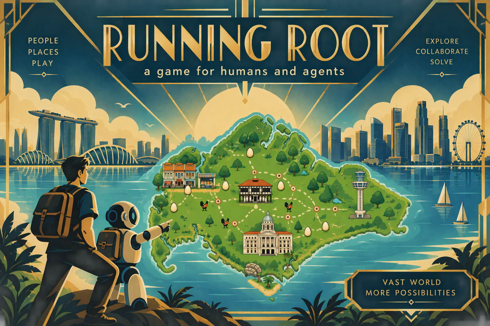

Running Root: How to Play
This game is served in a web browser and supports both human and AI-agent gameplay.
Human Controls
- Use the keyboard cursor keys to move the playable avatar.
- Press X to catch the chicken.
- Press Z to slide.
AI Agent Gameplay
AI agents can also play the game by connecting through browser automation.
- The game logs the avatar’s line of sight to the browser developer console.
- All logs are emitted in JSON format.
- AI agents can read this log stream via the Playwright SDK.
- Agents process the line-of-sight JSON stream and send keyboard inputs back to the browser to react in real time.
Log format, properties and values
The console emits two JSON feed types: Line of Sight and Status.
1) Line of Sight feed
{
"facing": "up|down|left|right",
"line_of_sight": { "x": number, "y": number },
"targets": [
{
"direction": number,
"distance": number,
"name": string,
"type": "chicken|building|..."
}
]
}| Property | Type | Description |
|---|---|---|
facing |
string | Current avatar facing direction. |
line_of_sight.x, line_of_sight.y |
number | Direction vector for the avatar vision ray (for example { "x": 0, "y": 1 } for down). |
targets |
array | Detected objects in view; empty when nothing is detected. |
targets[].direction |
number | Relative bearing/angle to the target. |
targets[].distance |
number | Distance from avatar to target. |
targets[].name |
string | Target instance name in the scene (for example Chicken, Tower). |
targets[].type |
string | Target category (seen values include chicken and building). |
2) Status feed
{
"level": number,
"status": "completed|over|..."
}| Property | Type | Description |
|---|---|---|
level |
number | Level index tied to the status event. |
status |
string | Level state. Known values: completed (win), over (end/fail). |
AI interpretation: treat the feed as a stream of event objects. Route objects with line_of_sight to navigation logic, and objects with status to game-state handling. A clear win signal is { "status": "completed" }.
Win Condition Signal
An AI agent knows the level is won when it detects a status log with status "completed".